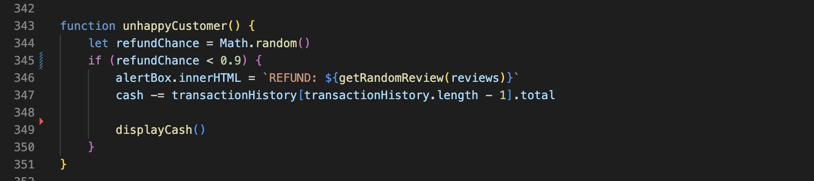
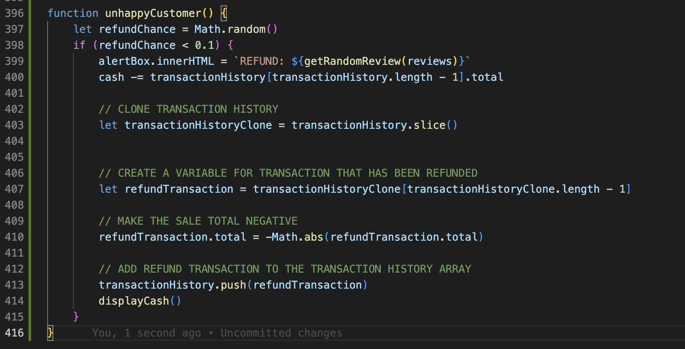
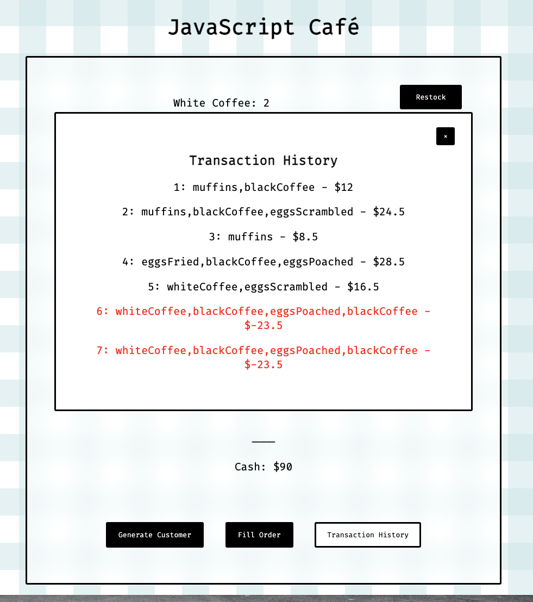
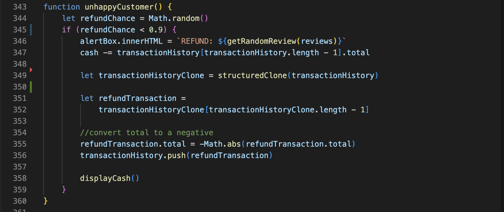
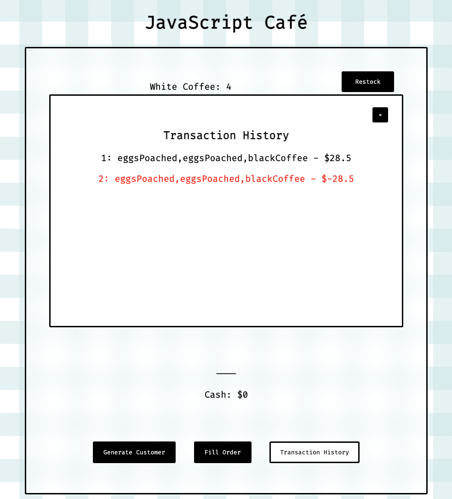
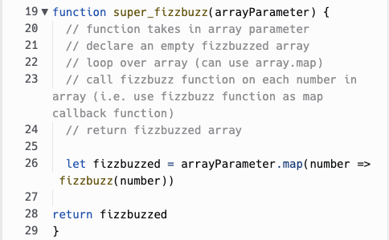

1. Were blocked on a simple problem:
In the last sprint, I was working through the stretch material on the Javascript Cafe application. One task had us creating a transaction history log that would log each transaction. Another task had us create a function that would create a small probability that a customer would demand a refund and leave a review. I had both these functions working in isolation, however I decided I wanted to show this refund transaction as a negative in the transaction history log.
In my head this sounded simple enough, so I got to work on it. My initial unhappyCustomer function can be seen below. It generates a random number between 0 and 1, and if that number is below 0.1 (a 10% chance), it will call a getRandomReview function that gets a random review from an array and displays it in the alert box. The function then deducts the sale total from the last transaction in the transactionHistory array.
My first instinct was to create a copy of the transactionHistory array, so I achieved this by creating a new variable called transactionHistoryClone that equals transactionHistory.slice(). This slice function returns a copy of the entire array as I have not included a start or end index as parameters. I then created a refund variable and set it to the last transaction in the cloned array, before making the saleTotal for that transaction a negative number. All I needed to do now was push it back into the original transactionHistory array.
The result was this:
Unfortunately in updating the refund transaction to a negative, I have indirectly updated the original transaction which means there are two negative transactions in the log. I added a few console logs to the function to see what variables were changing and at what stage, and this confirmed that both the clone and the original were being updated to show the negative transaction. I was stumped on this for a little bit, so I took to google to see what I could find out.
A quick google search led me to the concept of shallow and deep copies. A shallow copy method such as the slice() method I used creates a copy of the array, but still references the variables in the original array. So updating any variable in my cloned object will update the same variable in the original. Instead I needed to make a deep copy, which would clone the object without direct references to the original. I used the structuredClone() method which resulted in the below code:
The result was this:
It's now working as intended which is always a satisfying feeling. Even better, I now understand the difference between shallow and deep copies, and methods we can use to create these.
2. Elegantly solved a problem.
The super_fizzbuzz kata asked us to write a function that takes an array of numbers as its input, and return a fizzbuzzed array. Prior to this question we had written a fizzbuzz function that takes a number and returns the correct fizzbuzz properties depending on whether the number is divisible by 15, 5 or 3.
Because we already had the fizzbuzz function, my initial approach to the super_fizzbuzz function was to write a for loop, and call the fuzzbuzz function on the array[i] element for each iteration. This would have been an effective way to approach the problem, however before I started writing the function I had a better idea.
Fortunately prior to this kata we had been researching javascript methods, so the idea of using array.map() popped into my head. The map function loops over each element in an array and calls a user supplied function on that element. My problem solving technique here was essentially trial and error. At first I didn't really think it was going to work, maybe because it seemed too simple for a function with super in the title, but I gave it a crack anyway. The end result here is exactly the same as it would be with a for loop, but it is always satisfying when we can solve something with one line of code. (note: you can see i slightly strayed from my original pseudocode, which is absolutely fine. Writing the function out in plain english helped me arrive at the map() idea).
Problem Solving Techniques and Processes
My problem solving process, as you can see above, involves a lot of google, and a lot of trial and error. These are generally my go-to's and if I am still struggling I will look elsewhere.
Trial and error usually starts with me following my gut instinct and digging into whatever my first thought is. Oftentimes as you start to write code this thought can change or evolve into something completely different, but it gets the problem solving juices flowing and provides you with something testable. If my trials result in error, my next step would be to read the error message. Is something undefined? Am I trying to call a function that is not a function? Maybe it's a syntax error. These messages are great as they point me to the line of code that is triggering the error, and lets me know what is not working.
Console.logging is another technique I frequently use. Being able to log a variable or object after its creation, or after it has been manipulated by another function, is a great way to ensure your data is correct. Strategic placement of console.logs inside conditions or loops can also provide a lot of information about the flow of the application and whether or not these conditions are working as expected.
Something I have neglected a bit in the past is Pseudocode. Pseudocode refers to writing out the process and purpose of a function in plain english before writing the code. This helps provide a foundation for you to begin writing the code, and helps you keep inline with what needs to be achieved. It is easy to overcomplicate functions and try to do too much, so the pseudocode can be used as a guide of what needs to be included in the function. Pseudocode is something I am trying to do more of since I started a Dev Academy.
Googling is probably the most used problem solving technique. Once the trial and error has failed, or if I am just at a loss for where to start, I will head to Google. Programming isn’t a new phenomenon, chances are thousands of programmers have run into the same problems as you. Fortunately a lot of these problems and solutions are documented on sites like stackoverflow, or various programming related blog websites.
One of the best parts about being a part of Dev Academy, is that when all of the above fails, I can easily ask any of the other students and facilitators for a hand and they will be happy to help. Having a good support network, and peers that you can bounce ideas off is one of the most useful resources a programmer can have.